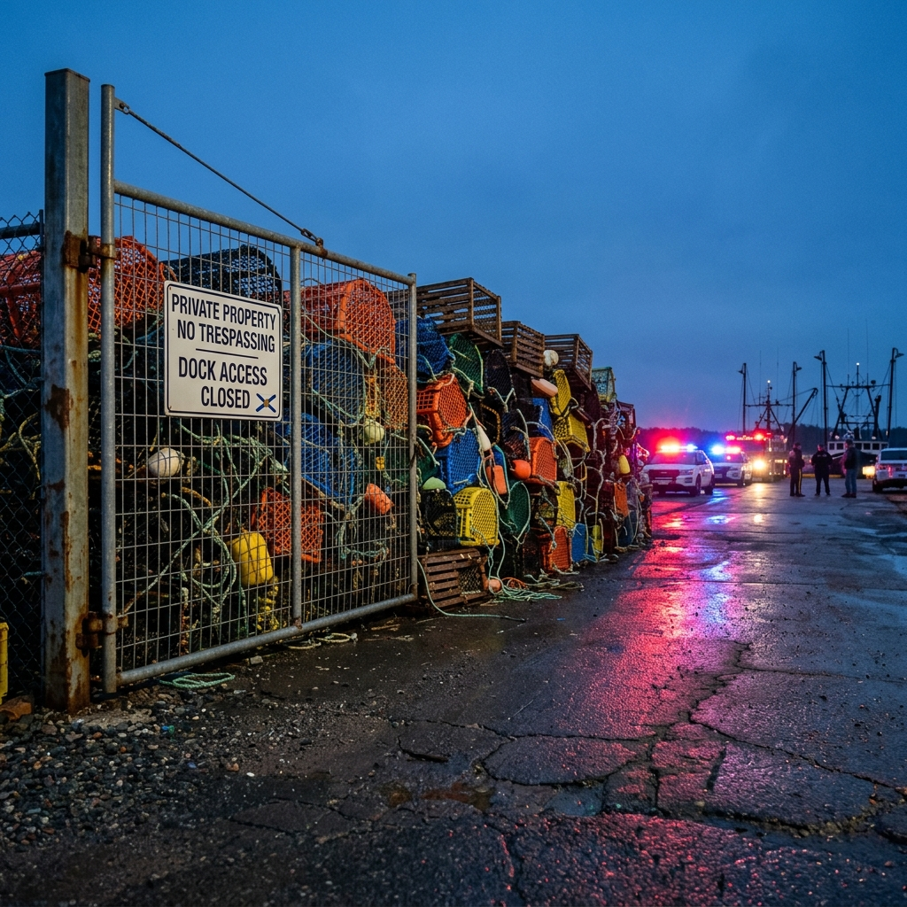
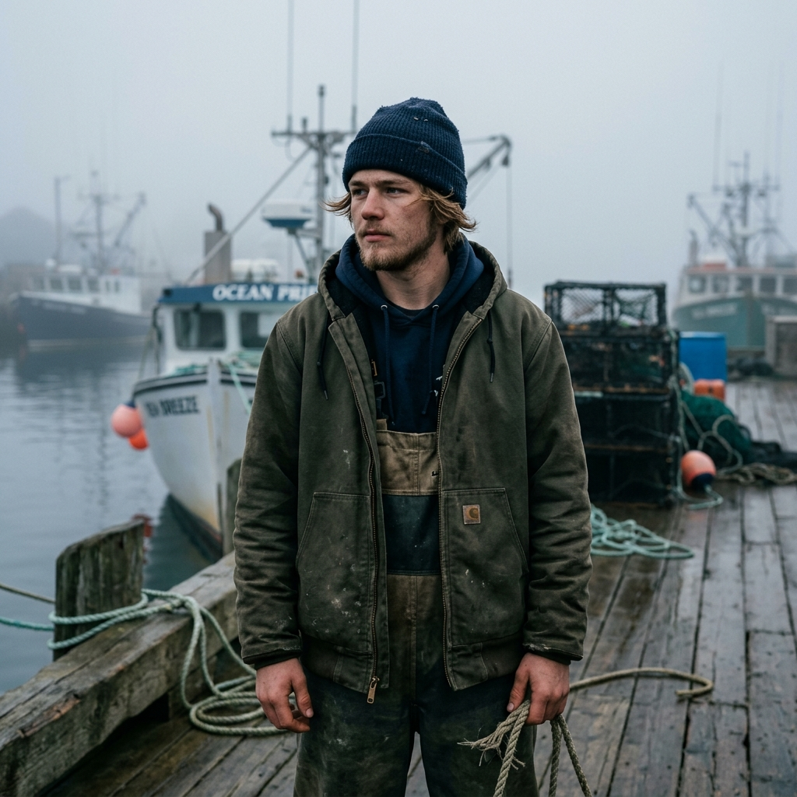

Spring lobster season is weeks away, and Sunrise Harbour is a powder keg. On one side: the Sunrise Collective (Mi'kmaw Treaty), asserting constitutionally protected Mi'kmaw Treaty rights to fish for a "moderate livelihood" under the 1760 Treaties and R. v. Marshall. On the other: Non-Indigenous Commercial Sector, demanding one law, one season, one rulebook for everyone.
The flashpoints have already begun: blockades at the wharf gate, gear seized in pre-dawn raids, and social media exploding with #WharfStandoff. The municipality's Harbor Authority is trapped between enforcing local bylaws and upholding the Honour of the Crown. Do nothing, and violence escalates. Act unilaterally, and face a constitutional challenge.

"I'm not asking for permission to fish on my own land," says Jordan, an 18-year-old Mi'kmaw harvester. "My right to a livelihood was signed in ink in 1760. It's not a hobby; it's our survival."
"We just want a level playing field," counters Bubs, 17, who is starting his first season on his father's boat. "If the rules don't apply to everyone, how do we know there will be any lobsters left for my generation?"
THE STAKES: The Sunrise Harbour Authority must now broker a constitutional peace: balancing sovereign Treaty rights, public safety, economic reconciliation, and the legacy of the 2020 Saulnierville violence: before the harbour tears itself apart.
MISSION DIRECTIVE: MARCHING ORDERS
WHO YOU ARE
You are the Chair of the Sunrise Harbour Authority. You're not a judge or a politician. Your job is to broker a peace that works for the families on this wharf—people like Jordan and Bubs, whose futures depend on the protocol you draft today.
THE PROBLEM
A constitutional implementation crisis is unfolding on your docks. While the law is clear on the supremacy of Treaty rights, the physical management of the wharf has not yet caught up to this legal reality:
- Mi'kmaw Treaty Rights: Sovereign, constitutionally protected rights (Section 35) that predate and override subordinate regulations.
- Commercial Industry Interests: Valid economic and safety concerns that operate within a regulatory framework, but must yield to justified Treaty exercise.
WHY NOW
Spring lobster season is three weeks away. The memory of the 2020 Saulnierville violence is still raw. UNDRIP is federal law. The harbour is teetering on the edge of another flashpoint that could reignite coastal tensions.
| IF YOU FAIL | IF YOU SUCCEED |
|---|---|
| Violence escalates and national crisis. | A replicable model for shared governance. |
| Constitutional lawsuit for Crown breach. | Balance sovereign rights with stability. |
| Treaty rights rendered meaningless. | Prevent violence through policy. |
YOUR OBJECTIVE
Lead the Joint Task Force to draft the 2026 Wharf Accord - a three-sentence protocol that will govern infrastructure access, safety standards, and consultation processes.
YOUR WORKFLOW
| PHASE | RESOURCES | TASK |
|---|---|---|
| ANALYZE | FIELD DATA | Wharf logs, incident reports, surveys. |
| REVIEW | LEGAL DOCS | 1760 Treaties, Marshall, Sparrow, UNDRIP. |
| ASSESS | INTEL FEED | Social trends, stakeholder positions. |
| PROPOSE | TERMINAL | Draft clause with two-exhibit rationale. |
The clock is ticking. The harbour is watching. The law is clear - but the path forward is yours to forge.